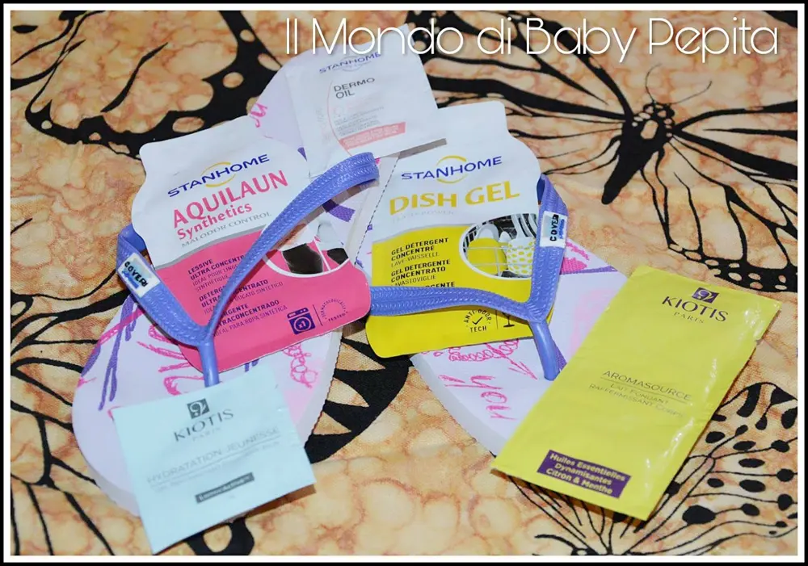
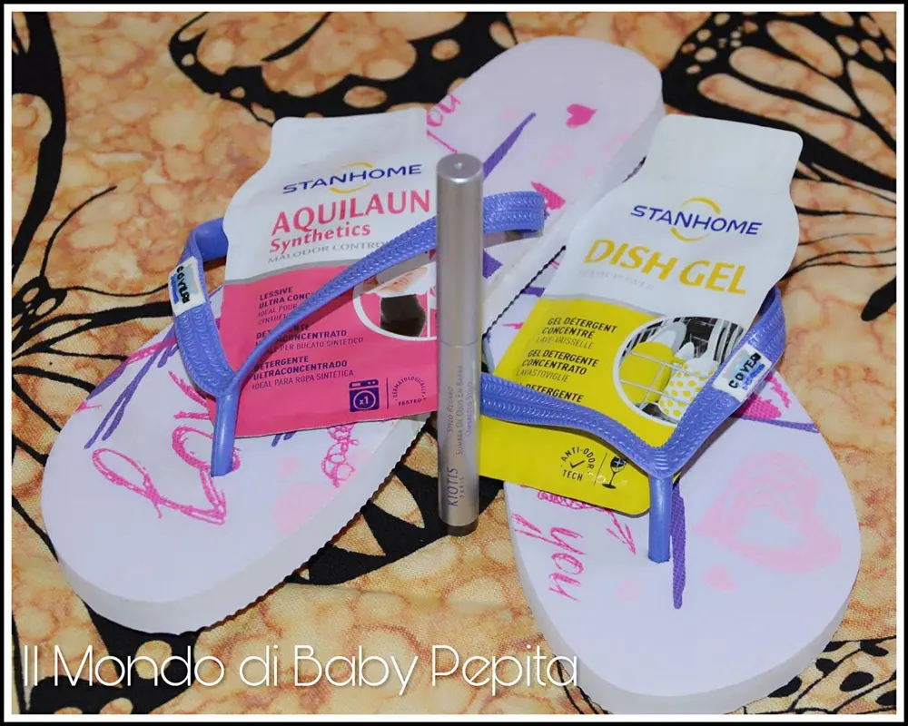
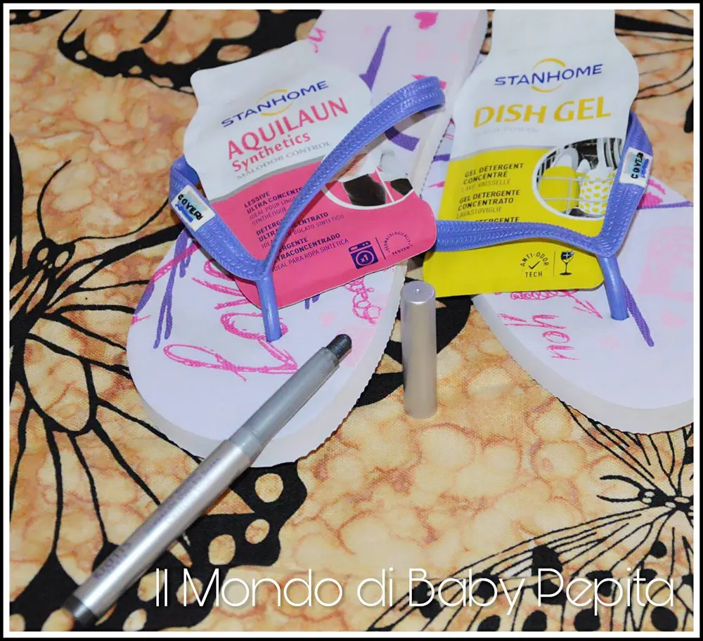
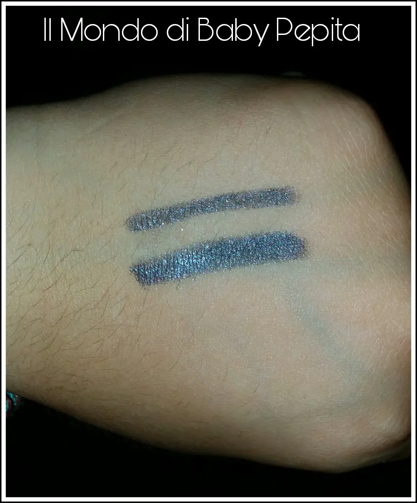
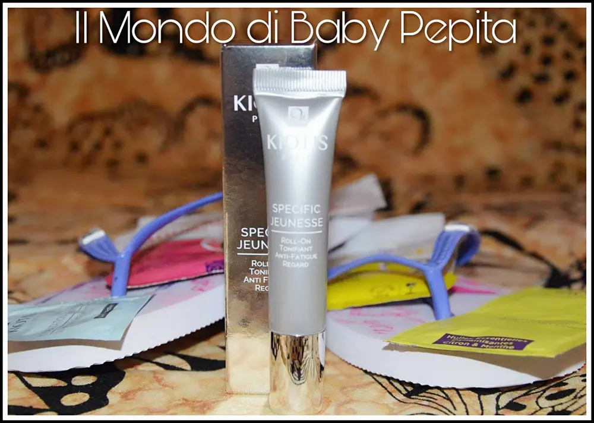
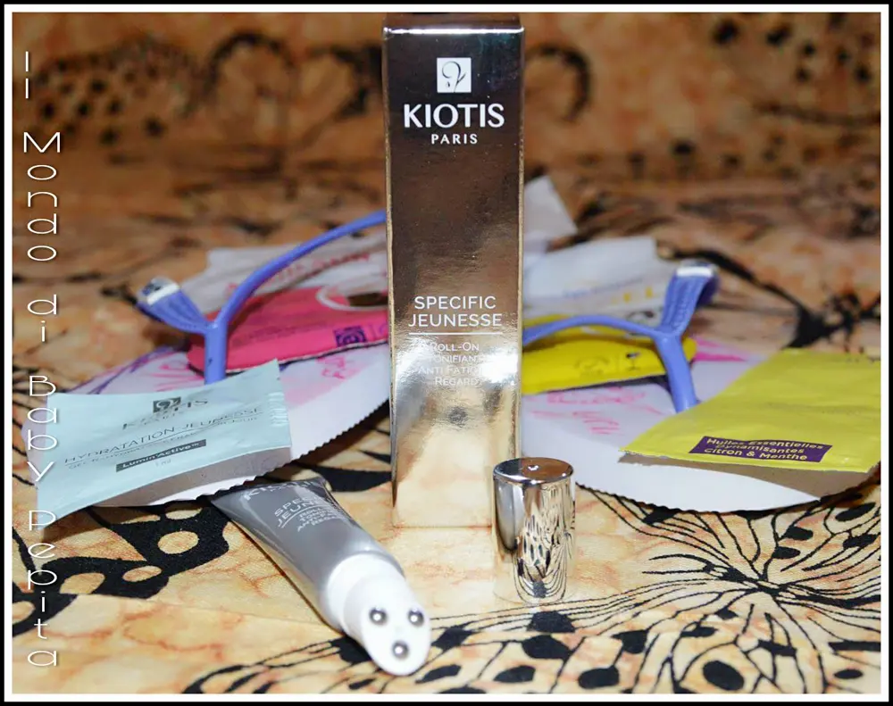
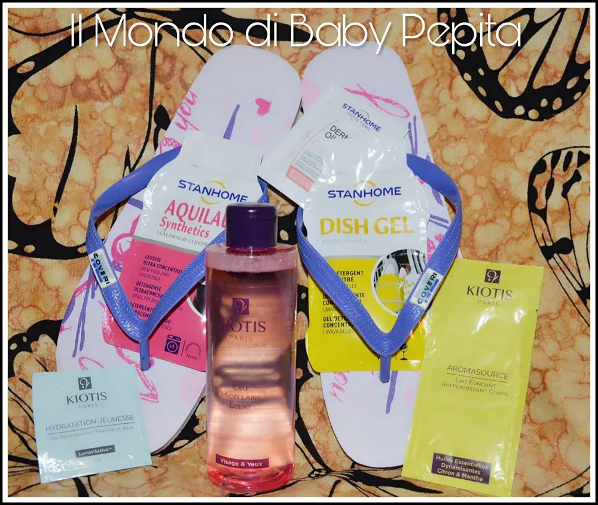
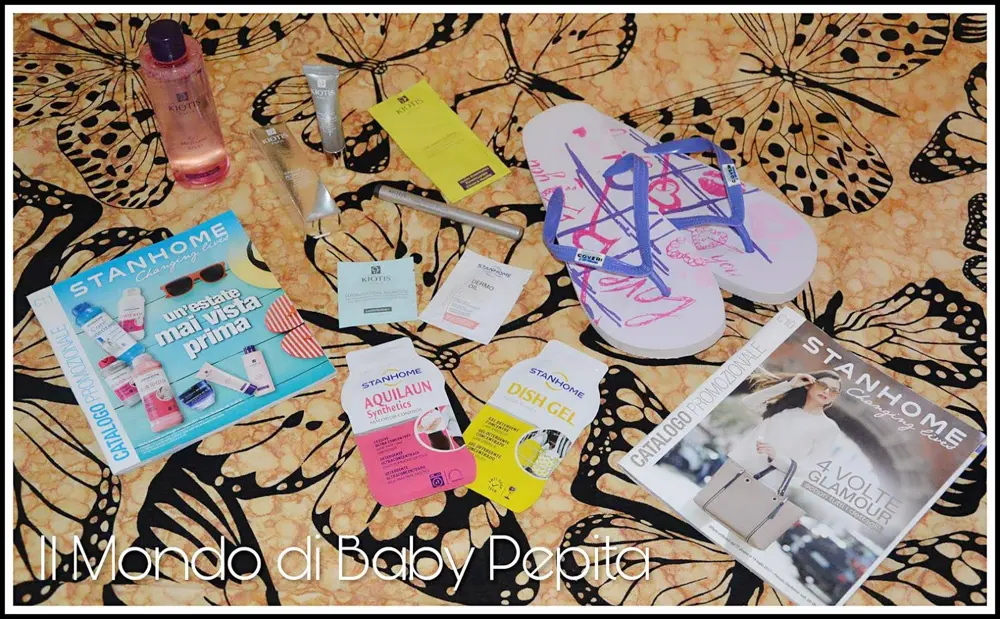

STANHOME BASSA FRIULANA
Dopo tante incomprensioni e soprattutto tanti mesi, oggi è qui il pacco in collaborazione con l'agenzia stanhome Bassa Friulana.
In un primo momento ho ricevuto dei campioncini mono dose di diversi prodotti tra cui prodotti per la pelle e altri per la pulizia della casa.
Conosco già la stanhome da anni in quanto mia madre ne ha sempre fatto uso per prodotti casalinghi quindi posso già confermare l'efficacia di ogni singolo prodotto. 
Ho ricevuto un campioncino mono dose di STANHOME DISH GEL, di questo prodotto sono sincera, non ho potuto testare il risultato perchè non possiedo una lavastoviglie.
Vi spiego però in cosa consiste.
È un gel detergente concentrato per lavastoviglie.
Una bustina monodose è ottima per un solo lavaggio, se si vuole provare.
Si scioglie rapidamente, buono anche per i cicli brevi e a basse temperature.
È un gel 3 in 1 ovvero deterge, brilla e rigenera.
È ottimo per pulite anche l'interno della lavastoviglie quindi fa doppia funzione.
In più neutralizza i cattivi odori sulle stoviglie e nella lavastoviglie stessa, questo grazie as una tecnologia Anti-odori contenuta nel profumo.
Ha un profumo fruttato di agrumi di arancia e polpelmo.
Il flacone intero da 720 ml costa 14,50 € e dura davvero tanto.


AQUILAUN synthetics:
Anche questo l'ho ricevuto in bustina monodose come potete vedere dalle foto.
In realtà conosco già l'efficacia di questo prodotto poichè, come dicevo all'inizio, mia madre ha usato tanti prodotti stanhome.
È un detergente ultraconcentrato per il bucato.
Ideale per il lavaggio dei tessuti sintetici (nylon, poliestere, elastico, acrilico).
Neutralizza gli odori su ogni abbigliamento anche quelli sportivi, questo grazie al controllo del cattivo odore che viene abbattuto dal bel profumo dell'aquilaun.
Tutto questo però lasciando intatte le fibre originarie, quindi senza rovinare o consumare il tessuto.
Pulisce e rimuove le macchie più profonde.
Va metto in lavatrice a 30°C con acqua fredda.
A mano invece, versare 15 ml in una bacinella con 5 litri di acqua. Lasciare in ammollo per 3-5 minuti e poi strofinare il bucato, risciacquare alla stessa temperatura senza però poi torcere.
Il flacone da 750 ml costa 11,50 €

Stanhome ovviamente ha davvero a disposizione migliaia di prodotti per la casa. Potete richiedere un catalogo o servirvi di quello online per sfogliarlo e vedere se magari vi interessa.
Come prodotto valido per la casa, stanhome si avvale anche di un marchio per la cura e la bellezza della pelle.
La KIOTIS, di cui l'azienda stanhome Basso Friuliano ha voluto farmi provare qualche prodotto davvero valido.
Ho ricevuto, oltre a campioncini, anche 3 prodotti ottimi per il makeup.
L'OMBRELLO STILO OCCHI della tonalità Bleu.
Ha una textura cremosa per una perfetta aderenza. Ha riflessi metallizzati.

Ottima per essere anche sfumata e posso dire che ha una durata fantastica in quanto è un ombretto waterproof. Infatti per essere tolta bisogna detergere per bene la palpebra.

Disponibile in 8 tonalità.

Prezzo: 16,50 € (e li vale tutti).

Il ROLL-ON OCCHI, questo prodotto è ideale per tonificare ed è un anti-stanchezza.
Vi siete svegliati stanchi? Con un pò di occhiaie? Passate questo tonificante intorno alle palpebre è in effetti una crema.
L'80% di donne che ha usato questa crema ha riscontrato un effetto tonificante immediato soprattutto a livello del contorno occhi.

Il 74% delle donne ha invece riferito che riduce il gonfiore degli occhi al mattino.
Ovviamente c'è bisogno di un uso quotidiano.
Il tubetto presenta sul beccuccio non un semplice buco dove fuoriesce la crema, ma bensì ha un applicatore con 3 sfere per massaggiare la pelle una volta premuto un pò di prodotto sul contorno occhi.
Prezzo: 19,90 €


L'ACQUA MICELLARE STANHOME credo sia un prodotto FANTASTICO.
È un detergente e struccante per viso e occhi.
Lascia la pelle perfettamente pulita da ogni traccia di makeup e in più purifica senza essere strofinata.
Non ha bisogno del risciacquo.
L'acqua micellare viene così chiamata perchè contiene 'micelle', ossia strutture dalla forma di microsfere invisibili in grado di attirare qualsiasi impurità fissandola sul cotone o sul dischetto. Si tratta quindi di una vera e propria calamita per il trucco, le impurità e il sebo.
Io l'adoro!
Prezzo: 15,00€

Ho provato questi prodotti dopo mesi grazie all'azienda Stanhome Bassa Friulana


Per quanto riguarda me seguitemi :